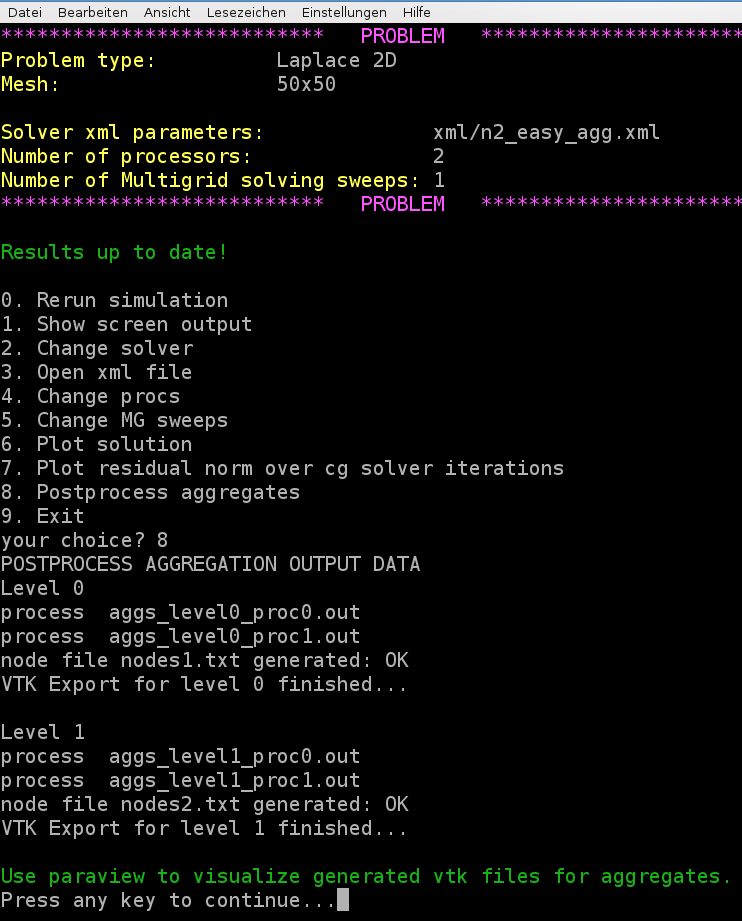
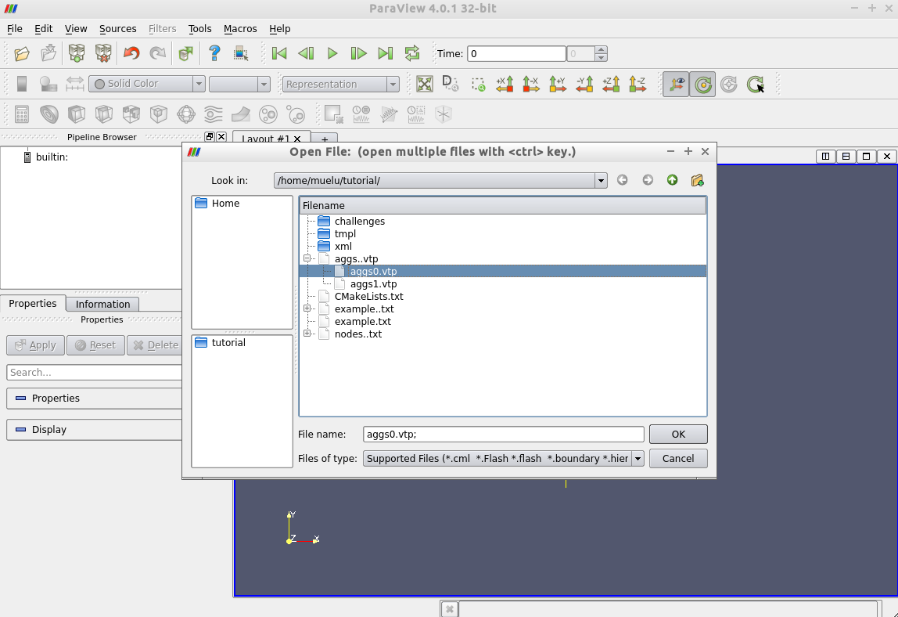
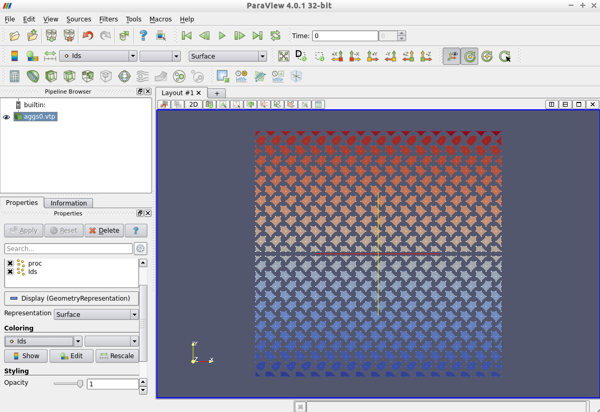
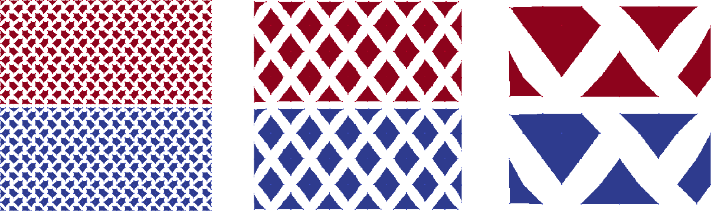
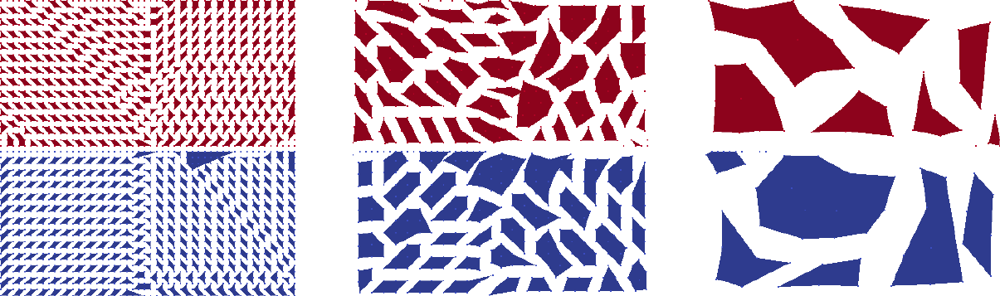

Useful tools for analysis
Visualization of aggregates
Technical prerequisites
MueLu allows one to export plain aggregation information in simple text files that may be interpreted by post-processing scripts to generate pictures from the raw data. The post-processing script provided with the MueLu tutorial is written in python and produces VTK output. Please make sure that you have all necessary python packages installed on your machine (including python-vtk).
Note
The visualization script has successfully been tested with VTK 5.x. Note that it is not compatible to VTK 6.x.
Visualization of aggregates with MueLu using VTK
We can visualize the aggregates using the vtk file format and a visualization program called ParaView. First add the parameter aggregation: export visualization data = true to the list of aggregation parameters. Use, e.g., the following xml file ../../../test/tutorial/n2_easy_agg.xml.
Run the hands-on.py script and select, e.g., the Laplace 2D example on a \(50\times 50\) mesh. Select above xml file for the multigrid parameters with the aggregation: export visualization data enabled. Run the program and then choose option 8 for post-processing the aggregates.
{kind=link}

Note
Be aware that without aggregation: export visualization data = true the post processing step for the aggregates will fail.
Once the visualization data is exported and post-processed you can run ParaView (if it is installed on your machine) and open the files aggs0.vtp and aggs1.vtp for visualization.
Start ParaView and open the files aggs0.vtp and/or aggs1.vtp. Do not forget to press the Apply button to show the aggregates on screen.
{kind=link}

Then the aggregates should be visualized as follows.
{kind=link}

Here the colors represent the unique aggregate id. You can change the coloring in the left column from Ids to proc which denotes the owning processor of the aggregate.
Figure Aggregates for Laplace2D example on 50\times 50 mesh without dropping. shows the aggregates for the Laplace2D problem on the different multigrid levels starting with an isotropic \(50\times 50\) mesh. No dropping of small entries was used when building the matrix graph (aggregation: drop tol=0.0). For visualization purposes the midpoint of each aggregate defines the coordinate of the supernode on the next coarser level. Be aware that these supernodes are purely algebraic. There is no coarse mesh for algebraic multigrid methods. As one can see from the colors an uncoupled aggregation strategy has been applied using 2 processors. The aggregates do not cross the processor boundaries.
{kind=link}

Fig. 19 Aggregates for Laplace2D example on \(50\times 50\) mesh without dropping.
Exercise 1
Repeat above steps for the Recirc2D example on a \(50\times 50\) mesh. Compare the aggregates from the ../../../test/tutorial/n2_easy_agg.xml parameter file with the aggregates when using the ../../../test/tutorial/n2_easy_agg2.xml parameter file, which drops some small entries of the fine level matrix \(A\) when building the graph.
Exercise 2
Vary the number of processors. Do not forget to export the aggregation data (option 7) after the simulation has rerun with a new number of processors. In ParaView choose the variable proc for the coloring. Then the color denotes the processor the aggregate belongs to. How do the aggregates change when switching from 2 to 3 processors? * Try the solver parameters from ../../../test/tutorial/s4c.xml or the Recirc2D example on a \(50\times 50\) mesh and compare them with the results for the ../../../test/tutorial/s4a.xml and ../../../test/tutorial/s4b.xml parameters. Which differences do you observe?
Figure Aggregates for Recirc2D example on 50\times 50 mesh with dropping. shows the aggregates for the Recirc2D problem. When building the matrix graph, entries with values smaller than \(0.01\) were dropped. Obviously the shape of the aggregates follows the direction of convection of the example. Using an uncoupled aggregation method (i.e., aggregation: type = uncoupled) as default the aggregates do not cross processor boundaries.
{kind=link}

Fig. 20 Aggregates for Recirc2D example on \(50\times 50\) mesh with dropping.
Export data
For debugging purposes it can be very helpful to have a look at the coarse level matrices as well as the transfer operators. MueLu allows one to export the corresponding operators to the matrix market format such that the files can be imported, e.g., into MATLAB (or FreeMat) for some in-depth analysis.
The following xml file writes the fine level operator and the coarse level operator as well as the prolongation and restriction operator to the hard disk using the filenames A_0.m, A_1.m as well as P_1.m and R_1.m
<ParameterList name="MueLu">
<Parameter name="verbosity" type="string" value="high"/>
<Parameter name="max levels" type="int" value="3"/>
<Parameter name="coarse: max size" type="int" value="10"/>
<Parameter name="multigrid algorithm" type="string" value="unsmoothed"/>
<Parameter name="smoother: type" type="string" value="RELAXATION"/>
<ParameterList name="smoother: params">
<Parameter name="relaxation: type" type="string" value="Gauss-Seidel"/>
<Parameter name="relaxation: sweeps" type="int" value="3"/>
<Parameter name="relaxation: damping factor" type="double" value="0.7"/>
</ParameterList>
<!-- Export data -->
<ParameterList name="export data">
<Parameter name="A" type="string" value="{0,1}"/>
<Parameter name="P" type="string" value="{0,1}"/>
<Parameter name="R" type="string" value="{0}"/>
</ParameterList>
</ParameterList>
Note
Be aware that there is no prolongator and restrictor on the finest level (level 0) since the transfer operators between level \(\ell\) and \(\ell+1\) are always associated with the coarse level \(\ell +1\) (for technical reasons). So, be not confused if there is no P_0.m and R_0.m. Only the operators are written to external files which really exist and are requested in the corresponding list in the xml parameters.
The exported files can easily imported into MATLAB and used for some in-depth analysis (determining the eigenvalue spectrum, sparsity pattern,…).